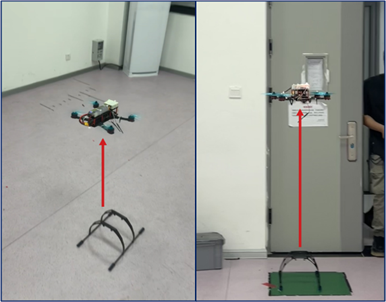

Autonomous Drone System
Category: Embedded Systems · Tools: STM32, PID, OpenMV · Year: 2025

This STM32F407-based quadrotor integrates a BLDC propulsion system, optical flow stabilization,
and PID-based attitude control, achieving precise autonomous navigation and landing.
A lightweight servo-driven robotic arm and OpenMV-H7-PLUS camera enable real-time object detection
and autonomous grasping with a 74.9% success rate.


Additional subsystems include UART modules for inter-sensor communication and a proximity detection module
allowing the drone to perform accurate obstacle avoidance.
Gallery